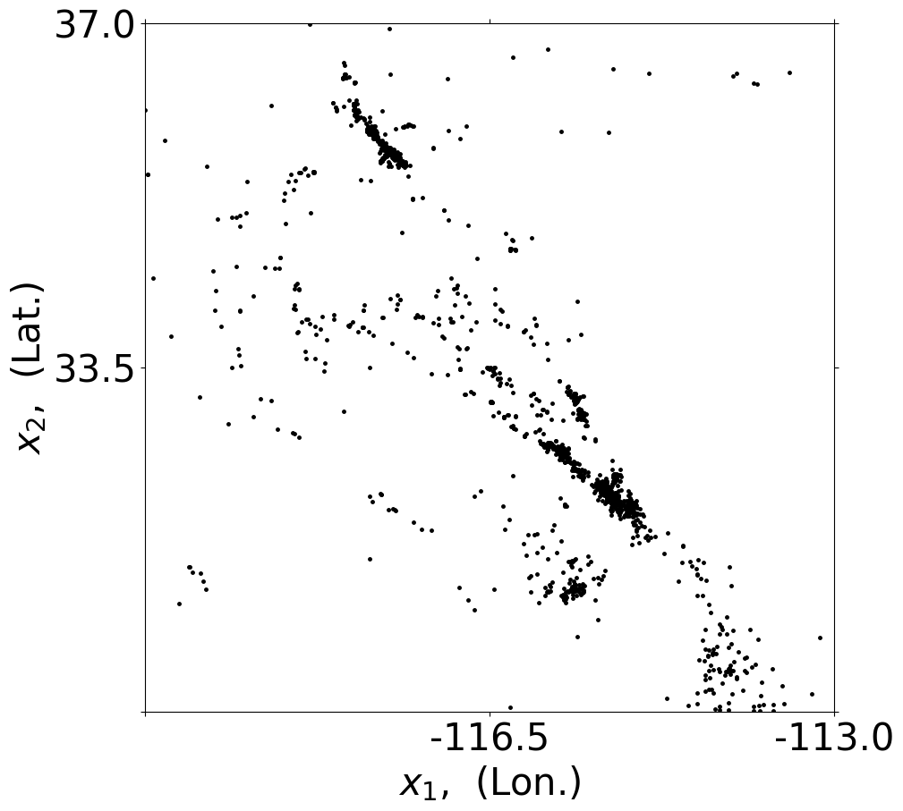
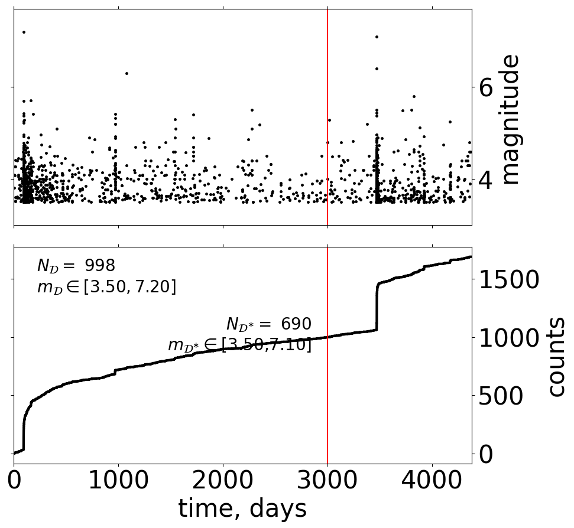
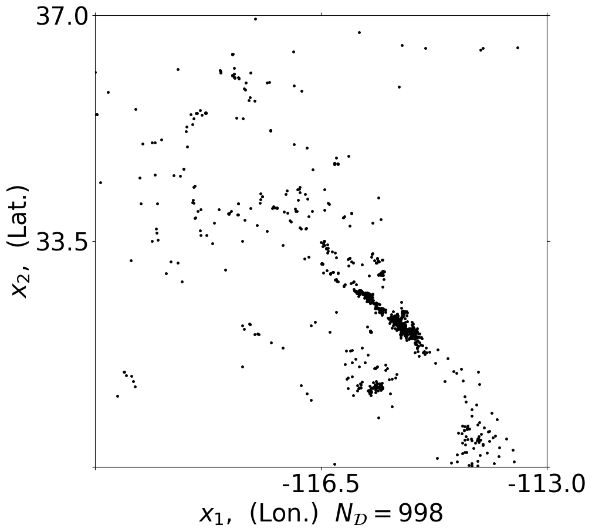
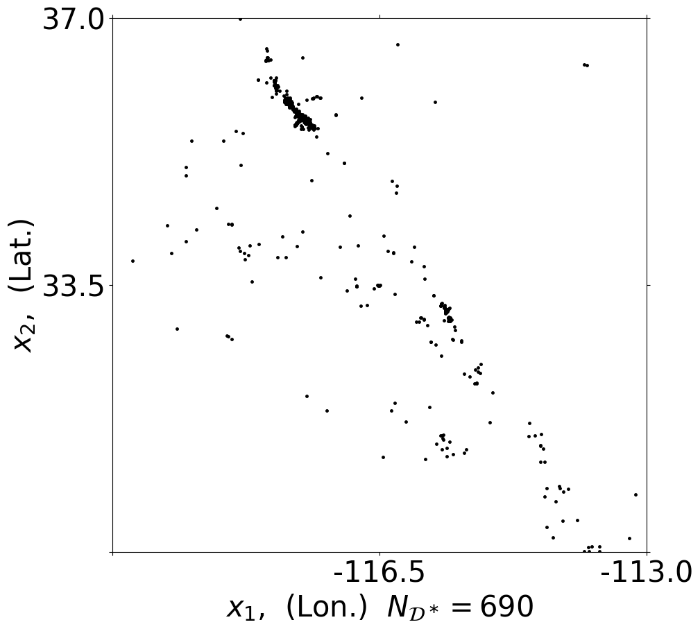
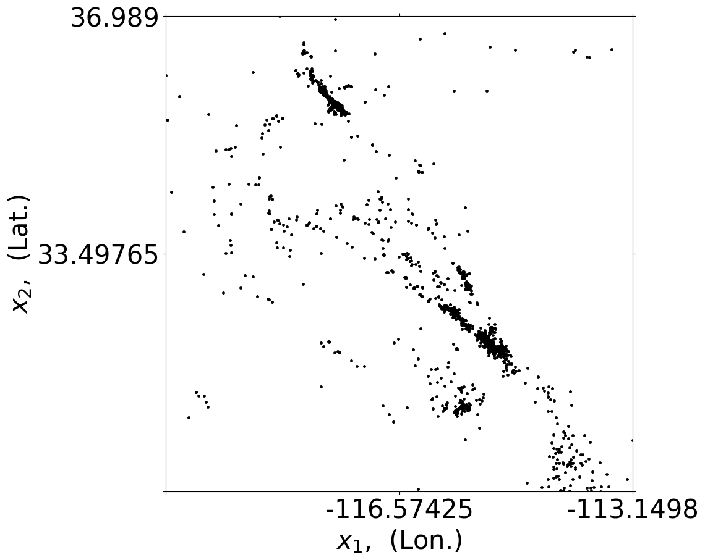
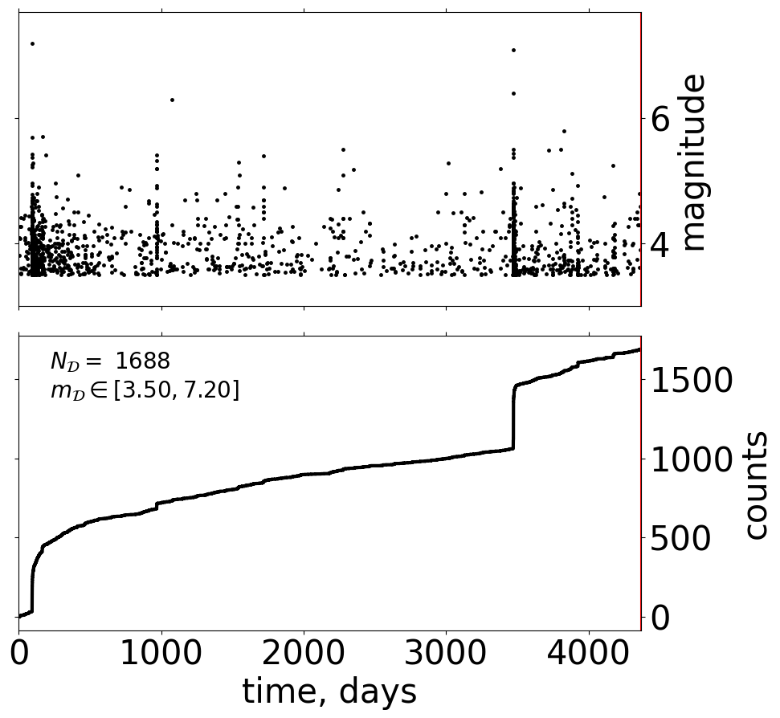
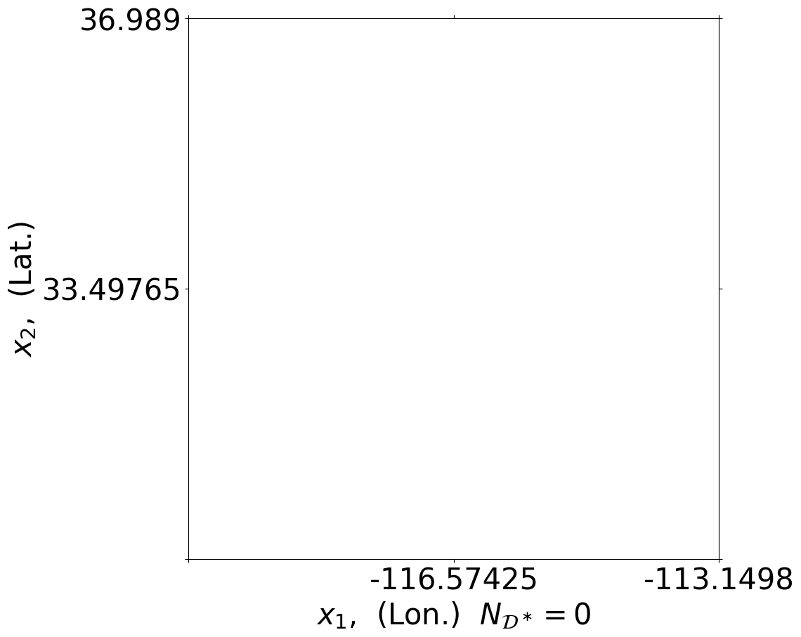

Data from a text file#
Observed data can be provided either directly in a text file with a specific format which gpetas can read.
[1]:
import gpetas
import numpy as np
# automatic domain
fname = './data/comcat_RSCA_m35_t0_0101_2010_all.cat'
data_obj_auto = gpetas.some_fun.create_data_obj_from_cat_file(fname)
____________________________________________________
data_obj has been created and saved in: ./inference_results/data_obj_case_01.all
[2]:
# specify domain
T_borders_all = np.array([0.,4383.]) # until '2022-01-01 00:00:00.0'
T_borders_training = np.array([0.,3000.])
time_origin = '2010-01-01 00:00:00.0'
X_borders = np.array([[-120., -113.],[ 30., 37.]])
m0=3.5
domain_obj = gpetas.utils.R00x_setup.region_class()
domain_obj.T_borders_all = T_borders_all
domain_obj.T_borders_training=T_borders_training
domain_obj.T_borders_testing = np.array([T_borders_training[1],T_borders_all[1]])
domain_obj.time_origin = time_origin
domain_obj.X_borders = X_borders
domain_obj.m0 = m0
# automatic domain is domain is not specified
fname = './data/comcat_RSCA_m35_t0_0101_2010_all.cat'
data_obj = gpetas.some_fun.create_data_obj_from_cat_file(fname=fname,domain_obj=domain_obj)
____________________________________________________
data_obj has been created and saved in: ./inference_results/data_obj_case_01.all
Structure of data_obj#
[3]:
data_obj.__dir__()[:6]
[3]:
['fname', 'case_name', 'domain', 'data_all', 'utm_yes', 'idx_training']
[4]:
data_obj.domain.__dir__()[:8]
[4]:
['T_borders_all',
'T_borders_training',
'T_borders_testing',
'X_borders',
'X_borders_UTM_km',
'X_borders_original',
'm0',
'time_origin']
Plot data object#
[5]:
h=gpetas.plotting.plot_setting(data_obj=data_obj)




[6]:
h=gpetas.plotting.plot_setting(data_obj=data_obj_auto)



